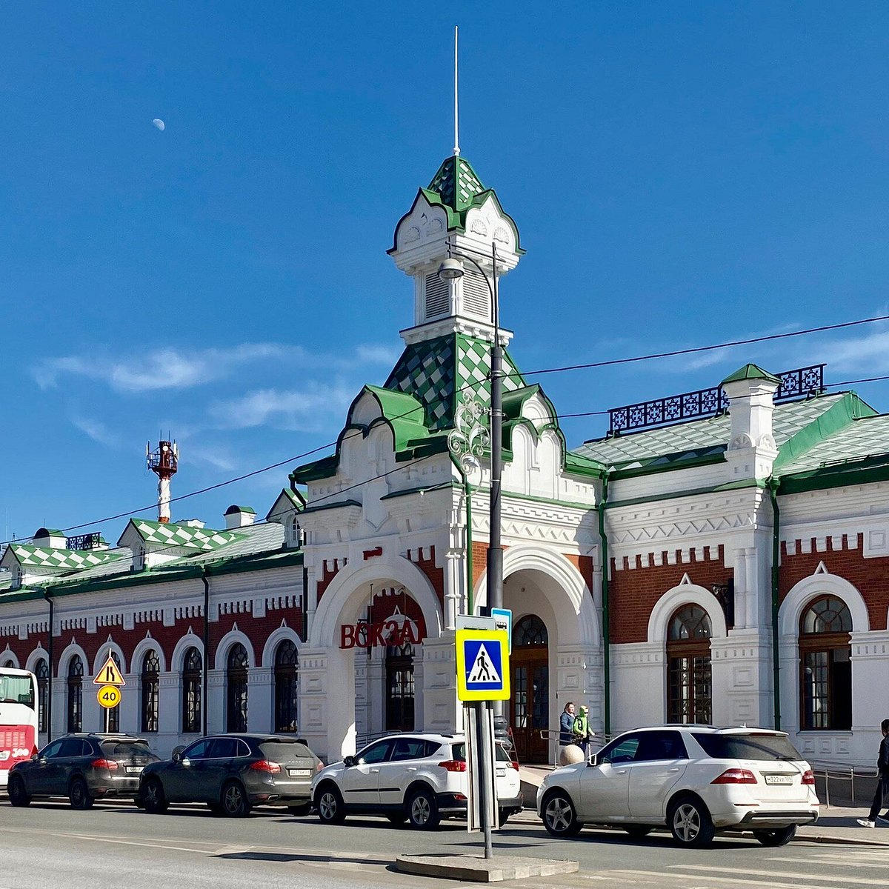

4. Вокзал Пермь I
Пермь, улица Монастырская, 5 · Найти на Яндекс Картах

История места
Вокзал Пермь I построили в 1878 году на месте торговых рядов около пристани. Его появление связано со строительством Уральской горнозаводской железной дороги.
Расположение станции рядом с Камой позволяло связывать железнодорожные и речные перевозки. Эта остановка относится к следующему этапу развития Перми: основанный в XVIII веке город становится важным транспортным узлом.
Значение для Перми и России
Вокзал показывает, как транспортные связи поддерживали торговлю и промышленность Прикамья. Железная дорога усилила связи Перми с другими уральскими городами и экономикой России.